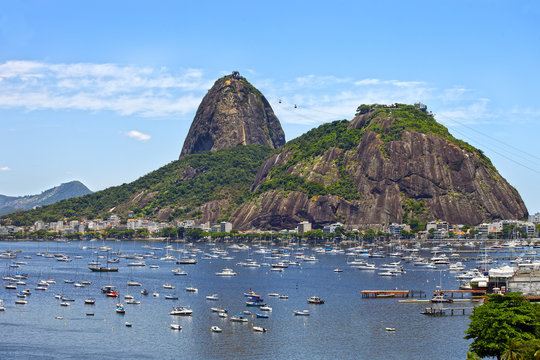
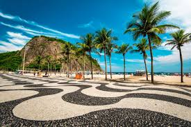

O Rio de Janeiro é um dos destinos turísticos mais famosos do Brasil. Cercada por montanhas, praias e florestas, a cidade oferece uma mistura única de natureza, história, entretenimento e cultura. Seja para relaxar à beira-mar ou explorar seus pontos turísticos, o Rio encanta visitantes do mundo inteiro.
Uma das Sete Maravilhas do Mundo Moderno.

Um dos pontos turísticos mais famosos do Brasil.

Uma das praias urbanas mais conhecidas do mundo.
Chegada e passeio pela Praia de Copacabana.
Visita ao Cristo Redentor e ao Parque Nacional da Tijuca.
Passeio de bondinho até o Pão de Açúcar.
Exploração da Lapa, Escadaria Selarón e centro histórico.
Entre em contato conosco para reservar sua viagem ao Rio de Janeiro e garantir uma experiência inesquecível na Cidade Maravilhosa!
📞 (85) 9 8940-9459
📧 minerioviagens@gmail.com